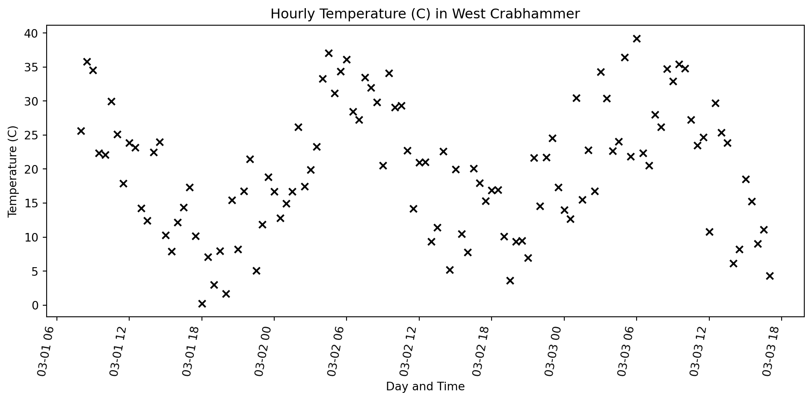
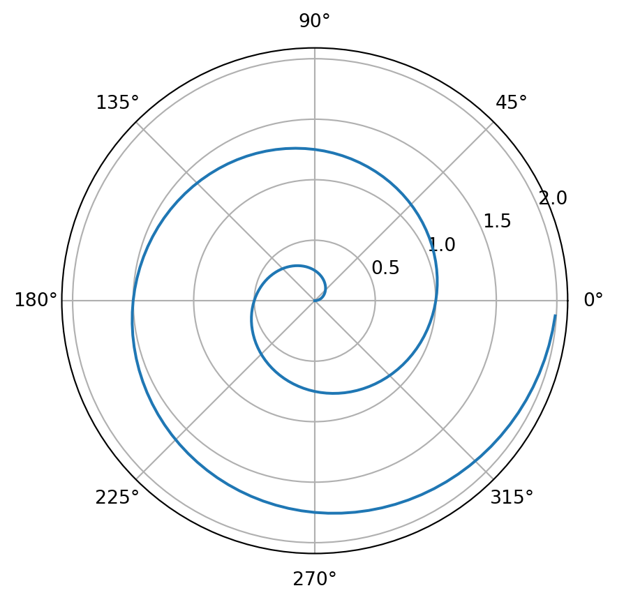

Geospatial Python For Total Beginners
Introducing Python
- Introducing Python
- Basic Geospatial Manipulations
Why learn Python
- It allows for more flexibility than a GUI based GIS program.
- Other GIS applications (e.g. QGIS, ArcGIS, postGIS) often have a Python interface.
- generally a widely used language.
Basic Python data types
| Type | Example(s) |
|---|---|
| String | 'Dude!' |
| Float | 1.2 |
| Int | 3 |
| Tuple | ('x', 'y')(1, 2)('x', 3.2) |
| List | ['x', 'y'][1, 2]Possible but bad –> ['x', 3.2] |
| Dict | {'dogs': 26, 'cats', 100} |
| etc… | there are others |
Basic Numbers
Floats and Ints don’t do anything all that surprising
a is an <class 'int'>
b is a <class 'float'>
c is a <class 'float'>
a / b is 1.0
5 / 4 is 1.25
but 5 // 4 is 1Sequences
Lists, tuples, and strings ae all sequences
# a list
a_list = [1, 2, 3, 4, 5, 6, 7, 8, 9]
# a tuple
a_tup = (1, 2, 3, 4, 5, 6, 7, 8, 9)
# a string
a_str = 'Wil je graag een neushorn?'
# access by index
a = a_list[0]
b = a_list[-1]
c = a_list[4]
print(f'by index:\n 0 --> {a},\n-1 --> {b},\n 4 --> {c}')
# works fro strings to
print('string item at 4 --> ', a_str[4])
# you can slice a list or tuple(remember 0 indexed)
print('\nslices:')
print(a_list[2:5])
print(a_list[8:])
print(a_tup[2:5])
print(a_str[-9:])by index:
0 --> 1,
-1 --> 9,
4 --> 5
string item at 4 --> j
slices:
[3, 4, 5]
[9]
(3, 4, 5)
neushorn?Dictionaries
26 honden
100 katten
126 huisdierenIterating
Vector Data
- Most often we will interact with vector data using GeoPandas
- GeoPandas is an extension of Pandas.
- It uses Fiona, which in-turn relies on GDAL and OGR, to read and write.
- Vector data is handled by the Shapely module, which relies on GEOS.
- GEOS implements the OGC Simple Features geometry
- Projections are managed by pyproj which is built upon PROJ
Pandas
taken from: FOSS4G 2022 | State of GeoPandas and friends, 9/16/24
Shapely
- Shapely Geometric Objects consist of coordinate tuples:
- Point - (x, y) or three dimensional (x, y, z), e.g.
Point(5.2, 52.1) - LineString - List if coordinates of vertices, e.g.
LineString([(0, 0), (1, 2)]) - Polygon - Basically a closed linestring, e.g.
Polygon(((0., 0.), (0., 1.), (1., 1.), (1., 0.), (0., 0.))) - Notice that the first and last coord of the Polygon are the same.
- More on Shapely geometries
- Point - (x, y) or three dimensional (x, y, z), e.g.
Polygon

Pandas DataFrame
from datetime import datetime, timedelta
from random import uniform
import matplotlib.pyplot as plt
import numpy as np
import pandas as pd
# some arbitrary time range
start_time = datetime(2025, 3, 1, 8, 0, 0) # 8:00 AM
end_time = datetime(2025, 3, 3, 17, 0, 0) # 5:00 PM
interval = timedelta(minutes=30)
time_stamps = []
current_time = start_time
while current_time <= end_time:
time_stamps.append(current_time)
current_time += interval
# some made up temperature data
temp_c = [
20 + uniform(-10, 10) + 10 *
np.sin(2 * np.pi * t.hour / 24)
for t
in time_stamps
]
# empty dataframe
df = pd.DataFrame()
# add data
df['date_time'] = time_stamps
df['T (C)'] = temp_c
df.head()| date_time | T (C) | |
|---|---|---|
| 0 | 2025-03-01 08:00:00 | 37.385518 |
| 1 | 2025-03-01 08:30:00 | 38.455555 |
| 2 | 2025-03-01 09:00:00 | 35.141336 |
| 3 | 2025-03-01 09:30:00 | 36.170979 |
| 4 | 2025-03-01 10:00:00 | 23.221839 |
Pandas DataFrame Cont.
# create the scatter plot
plt.scatter(df.date_time, df['T (C)'])
# set the x-axis tick labels and rotate them
plt.xticks(rotation=45, ha='right')
# label axes
#plt.xlabel('Day and Time')
#plt.ylabel('Temperature (C)')
#plt.title('Hourly Temperature (C) in West Crabhammer')
# adjust layout to prevent labels from overlapping
#plt.tight_layout()
# Show the plot
plt.show()
A random plot
import numpy as np
import matplotlib.pyplot as plt
r = np.arange(0, 2, 0.01)
theta = 2 * np.pi * r
fig, ax = plt.subplots(
subplot_kw = {'projection': 'polar'}
)
ax.plot(theta, r)
ax.set_rticks([0.5, 1, 1.5, 2])
ax.grid(True)
plt.title('What the heck is this polar plot trying to tell us?')
plt.show()
